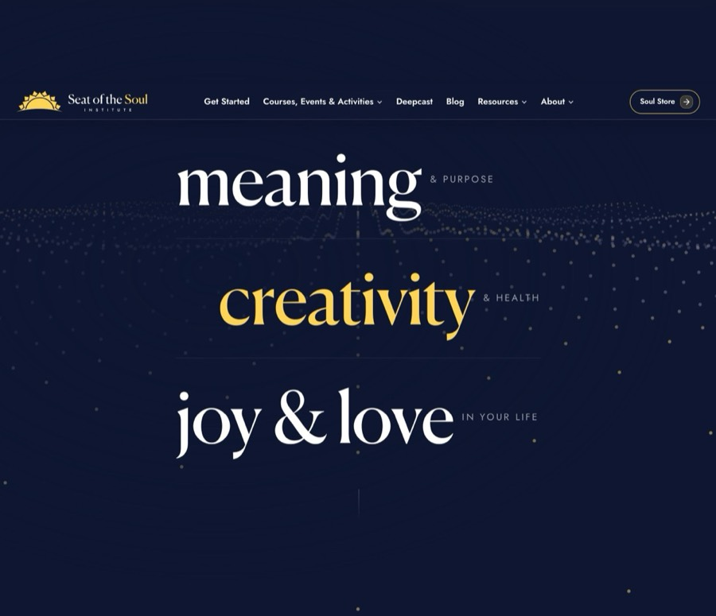
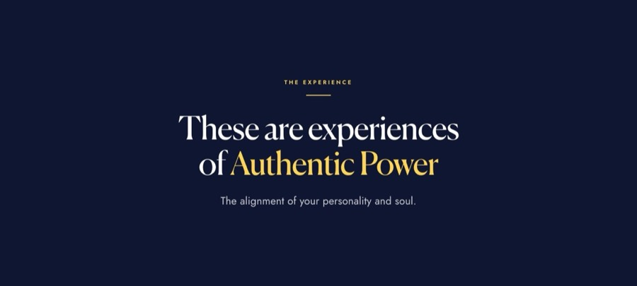
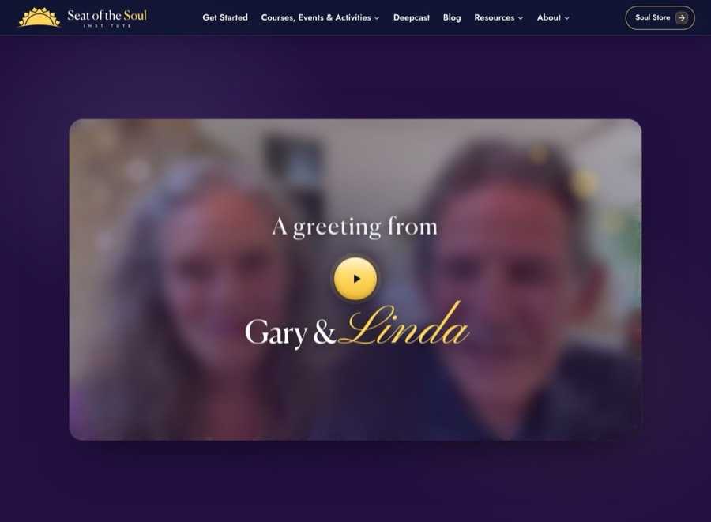
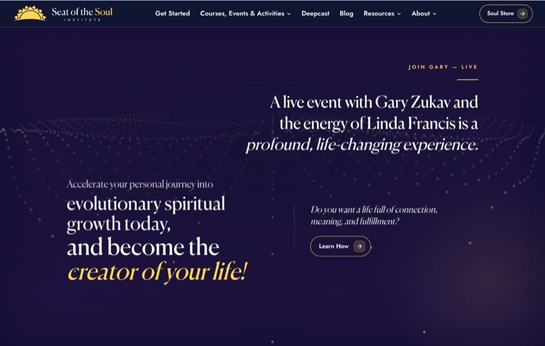
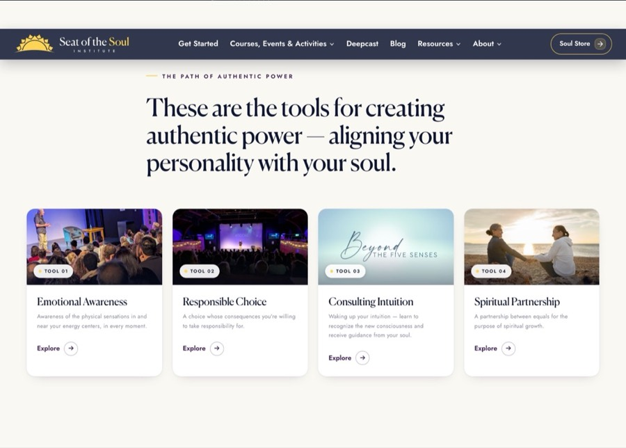
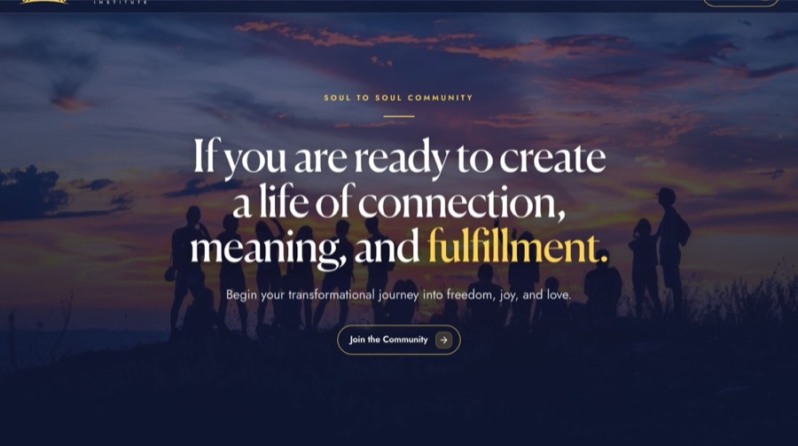
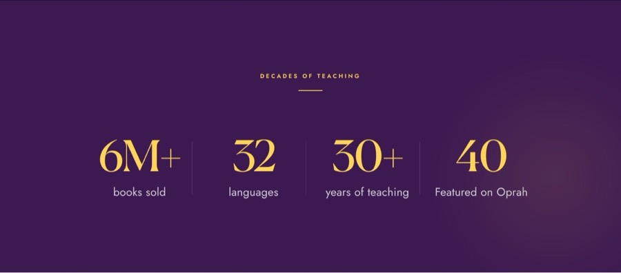
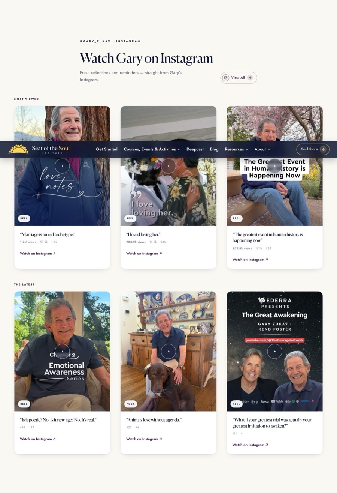
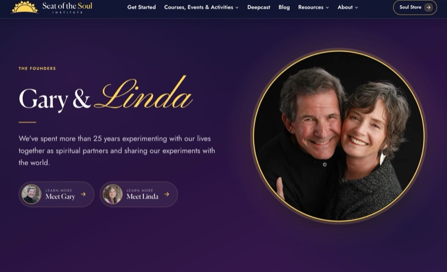
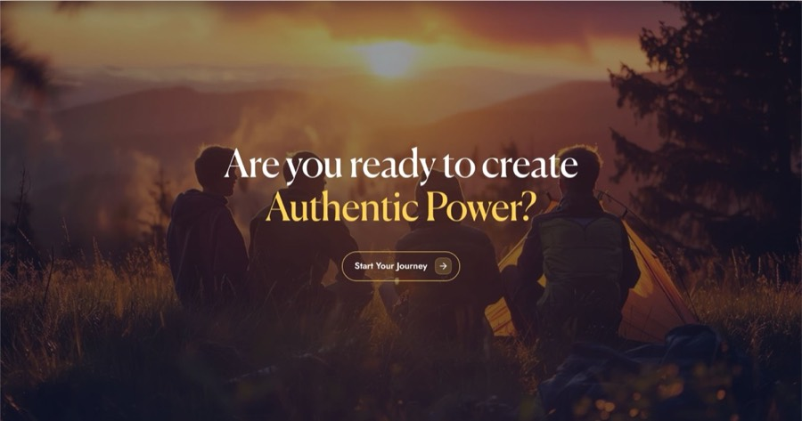

Home
Open live ↗The most animated page of the site. Every section is listed below exactly as it is named in the Navigator. In the Designer the hero shows its 4 slides stacked with orange labels — that is the editing view.
Safe in Edit mode? Partly — texts yes; anything ⚙/🔒 no.

Careful

Top navigation. One shared component on every page.
You can edit
- Open the Navbar in the Designer (double-click it)
- Double-click a link to edit its text; use Settings → link icon to change the destination
- Remember: this changes ALL pages
- Publish
Do not touch
- Don’t touch the grey CODE blocks inside it (menu behaviour, mobile menu)
- Don’t add/remove menu items without 22D — the mobile menu is wired separately
Careful

Four full-screen slides that rotate every 12 s on the live site. Each slide: photo + kicker + title + text + button.
Designer shows this differently: Shows all 4 slides stacked with orange “SLIDE N of 4” labels — the counter, arrows and dots appear as grey AUTO boxes.
You can edit
- Double-click the text inside the slide you want
- Keep the gold words inside their gold highlight
- Publish and watch the live hero rotate
- Click the photo → Settings → Replace Image (large landscape photo)
- Ask 22D to adjust the phone/tablet crop if needed
- Double-click the button text to edit it; link icon in Settings for the destination
Do not touch
- Slide 1’s buttons are hidden by design — leave them hidden
- Don’t delete the AUTO overlay tints or the grey CODE embeds at the bottom of the section
Careful

“Do you want a life of… meaning · creativity · joy” — three big animated rows over a wave animation.
Designer shows this differently: The wave canvas is empty in the Designer; the words don’t animate.
You can edit
- Double-click each ✎ row word/tag and type
- Keep words short — they animate letter by letter on the live site
Do not touch
- Leave the AUTO wave canvas and veil alone
Easy

Kicker + big headline + paragraph on the tide background.
You can edit
- Double-click and type
- Publish
Careful

The welcome video card. The video itself is loaded by code.
Designer shows this differently: The video area shows an AUTO note in the Designer.
You can edit
- Double-click the text on the card overlay
Do not touch
- The video file is managed by 22D — ask us to swap it
- Don’t touch the play button or the AUTO stage
Careful
Full-width background video with headline, subheadline, text and a button.
Designer shows this differently: Background video loads live only (AUTO note in Designer).
You can edit
- Double-click each ✎ text
- Button: double-click text / Settings for link
Do not touch
- Background video = ask 22D
Careful
Kicker + wave-animated headline + script line + gold button.
You can edit
- Texts: double-click
- Button label/link: click the button once → Properties panel on the right
Do not touch
- The headline animates word-by-word live — keep it one line
Easy

Kicker, headline, statement, question line and the “Learn How” button over animated waves.
You can edit
- Texts: double-click
- “Learn How” button: click once → Properties panel (Label + Link)
Do not touch
- AUTO wave canvas stays
Easy
Headline, statement, script line, the covers image and the “GET THE BOOKS” button (goes to Amazon).
You can edit
- Texts: double-click
- Covers image: click → Replace Image
- Button: click once → Properties (Label + Link)
Careful

The four practice cards. Card text and images come from the Courses collection — the page only holds the kicker and headline.
Designer shows this differently: Cards show CMS placeholders in the Designer.
You can edit
- Double-click
- CMS panel → Courses → open the practice item → edit → Save → Publish item
Do not touch
- The grid is pinned to these 4 items on purpose — new courses don’t appear here automatically (ask 22D to change the set)
Easy

Photo band with kicker, headline, text and the “Join the Community” button.
You can edit
- Texts: double-click
- Photo: click → Replace Image (wide landscape)
- Button: click once → Properties
Careful

Four tiles: number + label. Numbers count up from zero on the live site.
You can edit
- Double-click and type
- Double-click the number and type the new value
- IMPORTANT: with the number selected, open Settings (D) → Custom attributes → set data-count to the same value (and data-suffix for things like “M+”)
- If this feels fiddly, tell 22D the new number — 10-second fix
Careful

Header + three reel cards (poster, title, link to Instagram). A second “latest reels” row exists but is hidden and auto-fed.
You can edit
- Texts: double-click
- Posters: click → Replace Image
- Card links: click the card once → Settings → link
Do not touch
- Leave the hidden “latest reels” row hidden — it fills itself
Easy

Kicker, names, paragraph, photo, avatars, and the Meet Gary / Meet Linda links.
You can edit
- Texts: double-click
- Photos/avatars: click → Replace Image
- Links: click once → Settings → link
Locked

The three latest-post cards. They are pinned to posts that are managed in the 22D board.
Designer shows this differently: Cards show CMS placeholders.
You can edit
- Only the section header texts are yours — double-click
Do not touch
- Don’t edit the post cards or the posts behind them here — posts belong to the 22D board (the next sync overwrites Webflow edits)
- Want different featured posts? Ask 22D
Easy

Closing photo band with headline and the “Start Your Journey” button.
You can edit
- Headline: double-click
- Photo: click → Replace Image
- Button: click once → Properties